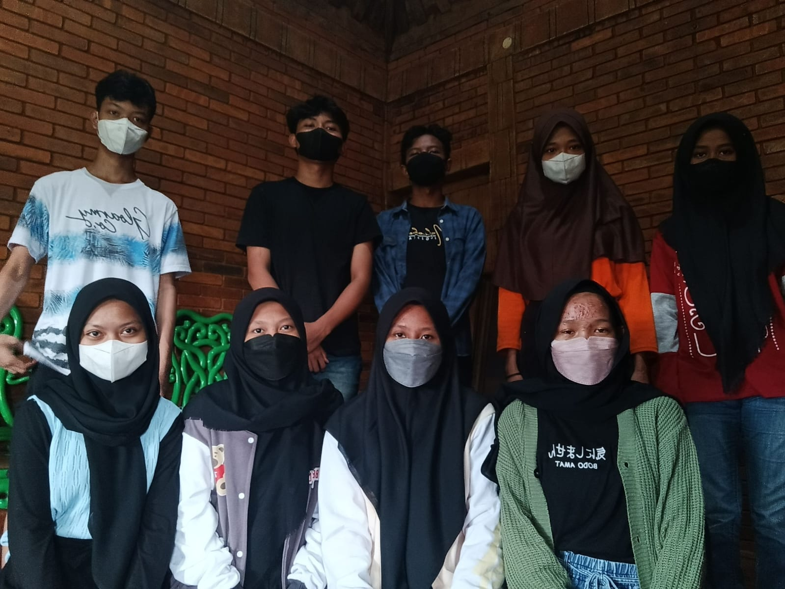

Pertama kali ketemu
Moment ketika mata kita pertama kali bertemu di tempat itu, dan dunia serasa berhenti berputar. Senyumanmu mengubah hariku yang biasa menjadi luar biasa.
Tempat menyimpan cerita, foto, dan kenangan kamu. Setiap detik bersamamu adalah kenangan yang tak terlupakan.
"Musik adalah cara terbaik untuk tidak merasa sendirian"
Ed Sheeran
Christina Perri
John Legend
Setiap momen bersamamu adalah kenangan yang tidak akan pernah terlupakan
Moment ketika mata kita pertama kali bertemu di tempat itu, dan dunia serasa berhenti berputar. Senyumanmu mengubah hariku yang biasa menjadi luar biasa.
Pengalaman pertama bersamamu bukan sekedar kenangan,tapi pelajaran tentang rasa. Setiap tawa dan cerita terasa begitu sempurna.
Lagu yang selalu mengingatkan ku tentang cerita indah bersamamu. Setiap kali lagu ini diputar, aku selalu teringat senyumanmu yang hangat.
Kadang yang sulit dilepas itu bukan orangnya, tapi kenangannya
"Obstacles mean nothing if someone is truly valuable."
Terima kasih sudah menjadi bagian dari hidupku. Setiap detik bersamamu adalah hadiah yang tak ternilai. Cintaku untukmu akan selalu ada, seperti bintang di langit malam yang tak pernah padam.